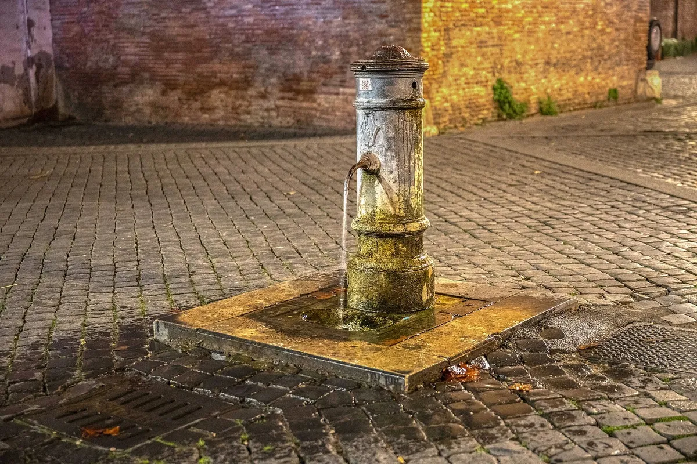

Roma in estate: caldo, nasoni e orari furbi per visitare il Vaticano
Luglio e agosto a Roma sono caldi, ma con gli orari giusti la città si gode. Acqua gratis dai nasoni, visite all'alba, pause lunghe e serate sul Tevere.

D'estate Roma è calda, e non conviene fingere il contrario. A luglio e agosto le massime medie superano i 30 gradi, e nelle ondate di calore si va ben oltre. Eppure la città in estate ha un fascino suo: le giornate lunghissime, le serate all'aperto, la luce del tramonto sul Tevere. Basta cambiare ritmo e adottare quello dei romani. Qualche regola pratica, pensata per chi parte dai nostri appartamenti tra Prati e Trionfale.
Il ritmo giusto: presto, pausa, sera
La regola d'oro è semplice: visite all'aperto la mattina presto, pausa nelle ore centrali, di nuovo fuori dal tardo pomeriggio. Piazza San Pietro alle otto di mattina è un'altra piazza rispetto a mezzogiorno, e il colonnato offre ancora ombra. Tra l'una e le quattro fa troppo caldo per camminare sui sampietrini: è l'ora del pranzo lungo, della doccia, del riposo.
Qui la posizione degli appartamenti fa la differenza. Dall'Ottaviano Apart, in Via Ottaviano, San Pietro è a dieci minuti e i Musei Vaticani a meno ancora: puoi fare la visita al mattino, rientrare a casa nelle ore calde e uscire di nuovo la sera senza attraversare la città. Lo stesso vale per il Vatican Cozy Retreat, a pochi passi dall'ingresso dei Musei.
I nasoni: acqua fresca e gratis
Roma ha un alleato prezioso contro il caldo: i nasoni, le fontanelle pubbliche in ghisa con il beccuccio ricurvo. Ce ne sono migliaia, in quasi ogni piazza e in molte strade, e l'acqua è potabile, fresca e controllata. I primi furono installati nel 1874, quando il Comune decise di portare acqua gratuita in tutta la città. Il nome viene dalla forma del tubo, che ricorda un naso.
C'è un trucco che i romani conoscono tutti: tappa con un dito l'uscita in basso, e l'acqua esce da un piccolo foro sulla parte superiore del beccuccio, formando uno zampillo da cui bere comodamente. Porta una borraccia e riempila a ogni nasone che incontri.
Abbigliamento e regole in Vaticano
Il caldo non cambia le regole. Per entrare nella Basilica di San Pietro e nei Musei Vaticani servono spalle e ginocchia coperte, anche ad agosto. La soluzione più pratica è un foulard o una camicia leggera in borsa, da indossare solo all'ingresso. Per il resto: cappello, crema solare, scarpe comode e traspiranti. La pietra della piazza riflette il sole e la sensazione di caldo sale ancora.
Agosto e Ferragosto
Agosto è il mese in cui molti romani lasciano la città. Il traffico cala, parcheggiare diventa facile, ma diverse botteghe, trattorie e negozi di quartiere chiudono per ferie, soprattutto nella seconda e terza settimana. Il 15 agosto, Ferragosto, è festa nazionale. Anche i Musei Vaticani hanno alcune chiusure estive, di solito a metà agosto: controlla il calendario ufficiale prima di fissare la visita.
- le udienze generali del mercoledì in genere si fermano per la pausa di luglio
- nelle domeniche di luglio il Papa può recitare l'Angelus da Castel Gandolfo invece che da San Pietro
- il 29 giugno, festa dei patroni, apre l'estate romana con l'infiorata e i fuochi di Castel Sant'Angelo
Le sere d'estate
Quando il sole cala, Roma si riempie. D'estate il Comune organizza una lunga stagione di eventi all'aperto, tra concerti, cinema sotto le stelle e spettacoli; lungo le banchine del Tevere spesso si allestiscono stand e locali estivi. Il Gianicolo, raggiungibile a piedi da San Pietro, è il posto migliore per prendere un po' d'aria al tramonto.
Se il caldo diventa troppo, il mare è vicino: la ferrovia Roma-Lido porta a Ostia con il normale biglietto dei mezzi pubblici; controlla prima eventuali lavori sulla linea, frequenti in estate. E i grandi parchi, come Villa Doria Pamphilj non lontano dal St Peter Urban Loft, offrono ombra e prati per le ore più fresche.
Vuoi organizzare un'estate romana con una base a dieci minuti da San Pietro, dove rientrare nelle ore calde? Scrivici su WhatsApp per le disponibilità di luglio e agosto.
Dormire vicino al Vaticano
Tre appartamenti tra Prati e il Vaticano, con check-in digitale e un host che risponde su WhatsApp.
Vedi gli appartamentiWhatsAppDomande frequenti
L'acqua dei nasoni di Roma è potabile?
Sì, l'acqua delle fontanelle pubbliche di Roma è potabile e controllata. Per bere comodamente si tappa l'uscita in basso e l'acqua esce dal foro superiore.
Si può entrare a San Pietro in pantaloncini d'estate?
No, anche d'estate per la basilica e i Musei Vaticani servono spalle e ginocchia coperte. Un foulard o una camicia leggera in borsa risolvono il problema.